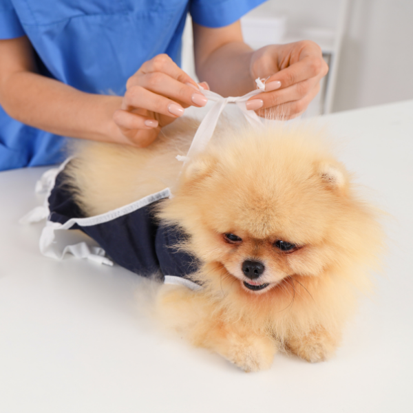
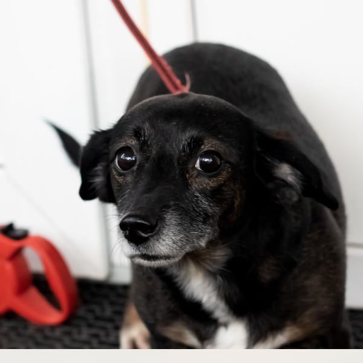
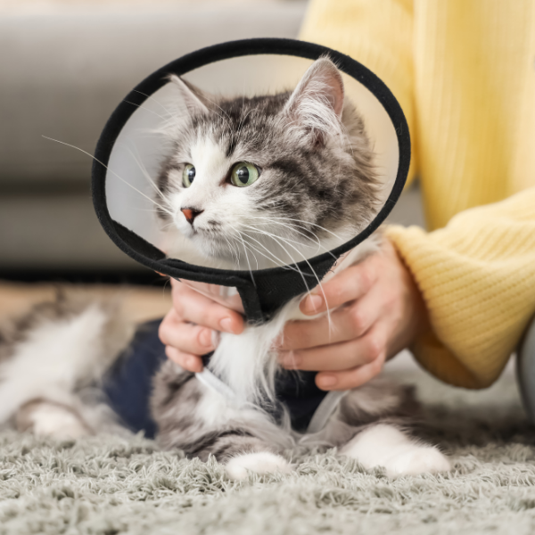
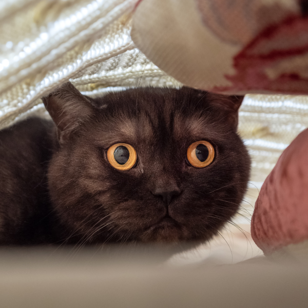
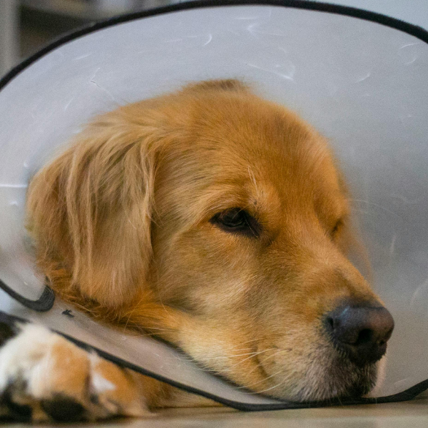

Cirugías
Esterilización Hembra Canina Perras
Procedimiento quirúrgico de ovariohisterectomía. Previene embarazos indeseados, infecciones uterinas (piómetra) y reduce el riesgo de tumores mamarios. Realizado en pabellón totalmente equipado.
- Duración de la cirugía: 90 min
- Valor: $80.000
- Incluye anestesia y hospitalización 24h

Esterilización Macho Canino Perros
Orquiectomía canina para evitar la reproducción, disminuir la agresividad por dominancia, reducir el marcaje territorial y prevenir enfermedades prostáticas.
- Duración de la cirugía: 60 min
- Valor: $60.000
- Incluye anestesia segura

Esterilización Hembra Felina Gatas
Intervención recomendada para evitar los molestos ciclos de celo, fugas del hogar y enfermedades reproductivas. Contamos con protocolos de anestesia felina altamente seguros y manejo del dolor.
- Duración de la cirugía: 60 min
- Valor: $65.000
- Incluye anestesia y hospitalización 12h

Esterilización Macho Felino Gatos
Procedimiento de castración rápida que mejora la calidad de vida de tu gato, evitando peleas territoriales, maullidos nocturnos, fugas y transmisión de virus como la leucemia o inmunodeficiencia felina.
- Duración de la cirugía: 45 min
- Valor: $50.000
- Incluye anestesia

Extirpación de Tumor Cutáneo Perros y Gatos
Cirugía oncológica menor enfocada en la remoción segura de masas, nódulos o quistes alojados en la piel. Se aplican márgenes quirúrgicos seguros y se ofrece servicio adicional de biopsia (histopatología).
- Duración aprox: 60 min
- Valor: $120.000 (Precio referencial; varía según tamaño)
- Incluye estabilización de tejido blando

Cesárea de Urgencia Perras y Gatas
Atención obstétrica vital cuando existe distocia o dificultad para el parto natural. Nuestro equipo realiza la extracción quirúrgica de los cachorros cuidando en todo momento la vida de la madre y sus crías.
- Duración de la intervención: 120 min
- Valor: $180.000
- Equipo de urgencias disponible